Visualizing Longitudinal Trajectories with geom_kodom_line
kodom-lines.Rmdgeom_kodom_line() draws one horizontal lane per subject,
with time on the x-axis and value encoded as a color gradient along each
path. It is a direct ggplot2 layer, so it composes freely with
facet_wrap(), scale_*(), theme(),
and any other ggplot2 building block.
Sample data
All examples use a simulated HbA1c dataset: 25 patients each with
6–12 irregular visits over 24 months. Each patient also has a fixed
age covariate used later to demonstrate independent
aesthetic mappings.
set.seed(42)
n_subjects <- 25
n_obs_per <- sample(6:12, n_subjects, replace = TRUE)
df <- do.call(rbind, lapply(seq_len(n_subjects), function(i) {
n <- n_obs_per[i]
base <- rnorm(1, mean = 7.5, sd = 1.2)
trend <- rnorm(1, mean = -0.02, sd = 0.01)
time <- sort(runif(n, 0, 24))
value <- base + trend * time + rnorm(n, sd = 0.4)
data.frame(
subject_id = sprintf("P%03d", i),
visit_month = time,
relative_month = time - min(time),
hba1c = pmax(4, value),
arm = ifelse(i <= 12, "Treatment", "Control"),
age = sample(30:75, 1),
stringsAsFactors = FALSE
)
}))1. Basic usage
Map x to time, id to the subject
identifier, and colour to the measurement value. The stat
assigns each unique id a lane position on the y-axis
automatically.
ggplot(df, aes(x = visit_month, id = subject_id, colour = hba1c)) +
geom_kodom_line() +
scale_colour_kodom() +
labs(x = "Visit (months)", y = "", colour = "HbA1c (%)") +
theme_kodom()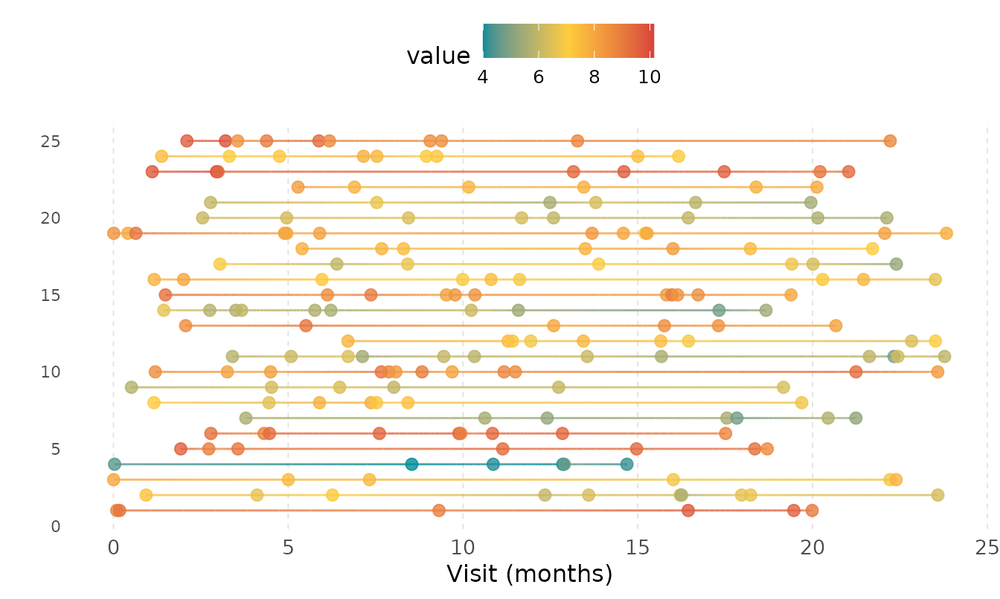
The color along each path is a smooth gradient interpolated between consecutive measurement points, not a step function. Teal = lower HbA1c, red = higher.
2. Lane ordering with sort_by
By default lanes follow first-appearance order of subject IDs. Use
sort_by to re-order by a summary of the colour
variable.
# Top lanes = highest mean HbA1c, bottom = lowest
ggplot(df, aes(x = visit_month, id = subject_id, colour = hba1c)) +
geom_kodom_line(sort_by = "mean") +
scale_colour_kodom() +
labs(x = "Visit (months)", y = "", title = 'sort_by = "mean"') +
theme_kodom(legend_position = "top")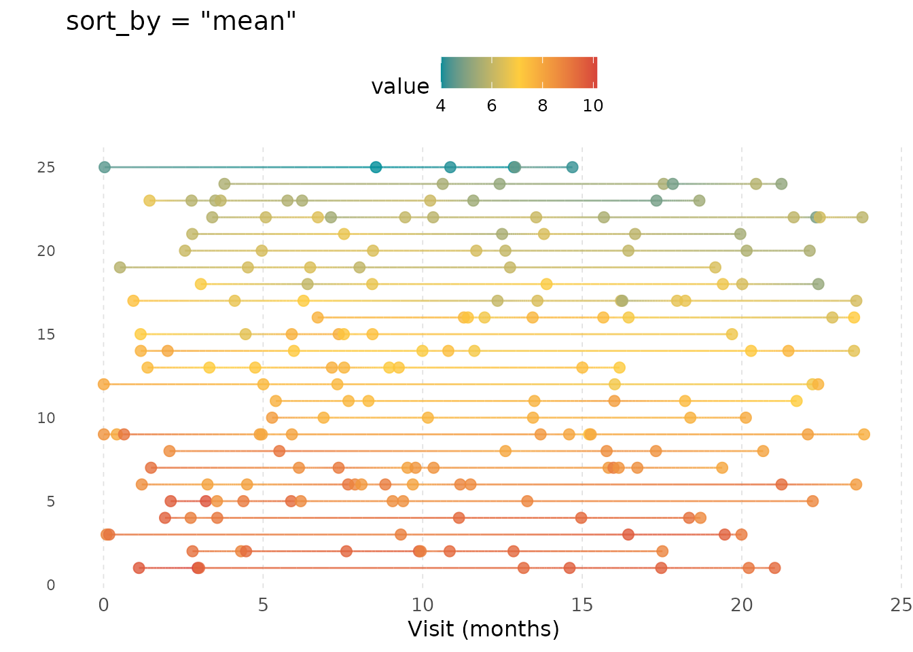
Available sort_by values:
| Value | Lane order |
|---|---|
"none" |
First appearance in data (default) |
"mean" |
Descending mean of colour
|
"mean_asc" |
Ascending mean of colour
|
"first" |
Descending value at earliest timepoint |
"last" |
Descending value at latest timepoint |
Often visits are counted by relative differences with the initial visit for every patients marked at time . This can be achieved by simple transformation of the data.
ggplot(df, aes(x = relative_month, id = subject_id, colour = hba1c)) +
geom_kodom_line(sort_by = "first") +
scale_colour_kodom() +
labs(x = "Visit (months)", y = "", title = 'sort_by = "mean"') +
theme_kodom(legend_position = "top")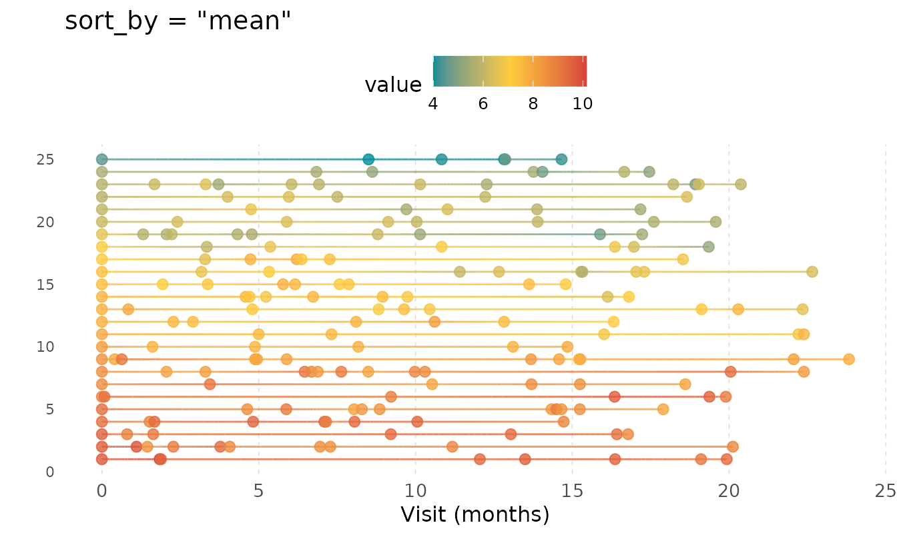
3. Limiting subjects with n_max
For large cohorts, n_max takes a random sample of
subjects to keep the plot readable. Here we show only 12 of the 25
patients.
ggplot(df, aes(x = visit_month, id = subject_id, colour = hba1c)) +
geom_kodom_line(sort_by = "mean", n_max = 12) +
scale_colour_kodom() +
labs(x = "Visit (months)", y = "", title = "12 randomly sampled subjects") +
theme_kodom()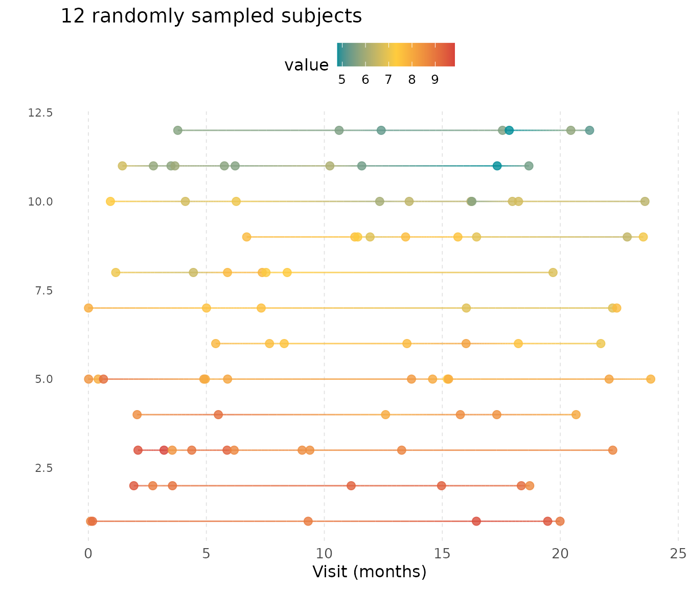
4. Controlling points
show_points = TRUE (the default) places a dot at every
observation. This makes irregular visit times visible at a glance —
critical for sparse clinical data.
p_base <- ggplot(df, aes(x = visit_month, id = subject_id, colour = hba1c)) +
scale_colour_kodom() +
labs(x = "Visit (months)", y = "") +
theme_kodom()
p_base + geom_kodom_line(show_points = TRUE) +
labs(title = "show_points = TRUE (default)")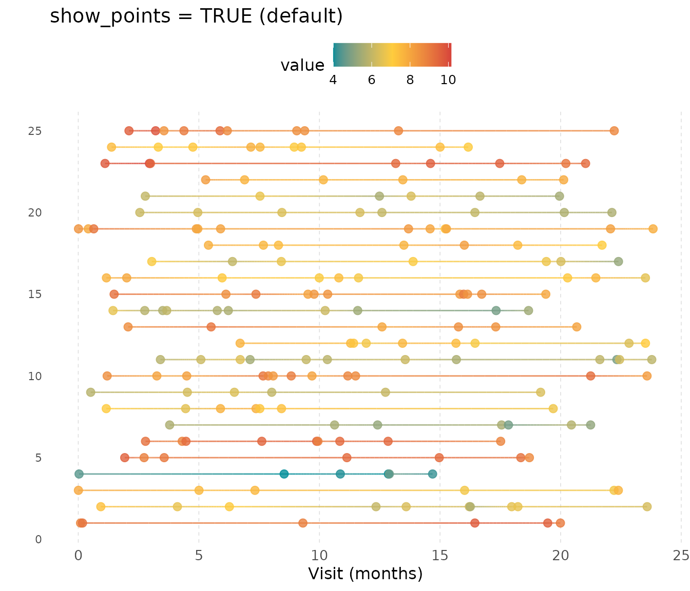
p_base + geom_kodom_line(show_points = FALSE) +
labs(title = "show_points = FALSE")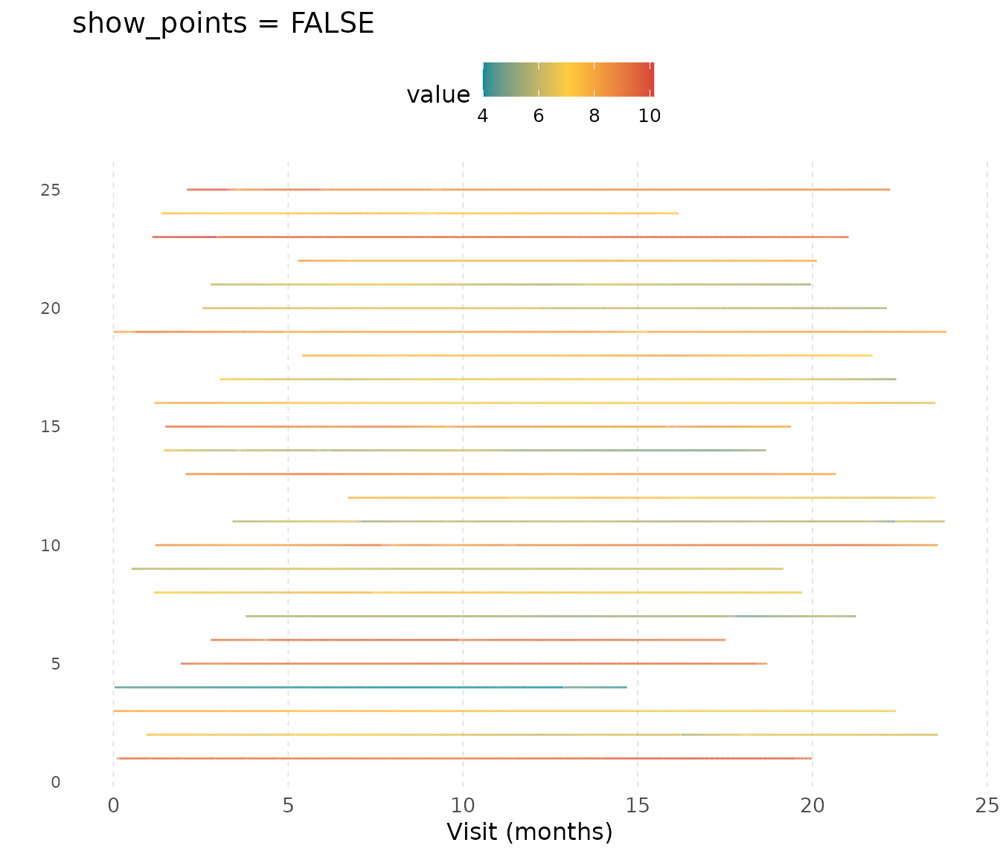
You can also suppress points by passing shape = NA or
size = 0 as fixed aesthetics — useful when you want to keep
the parameter API consistent across geom calls:
p_base + geom_kodom_line(shape = NA) +
labs(title = "shape = NA — same effect as show_points = FALSE")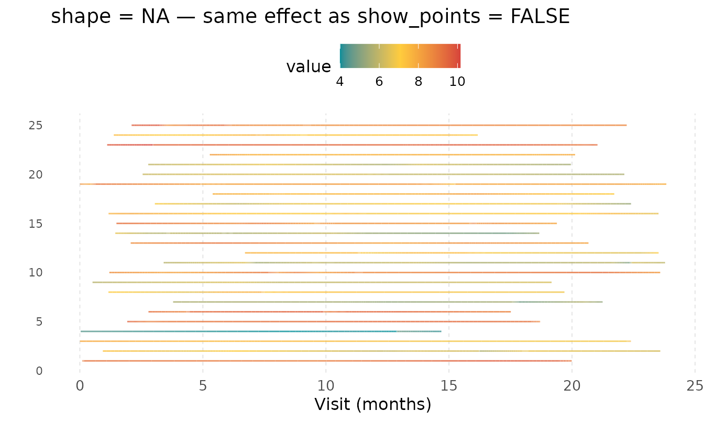
5. Customising point appearance
shape, size, stroke, and
fill control the observation markers. These follow standard
ggplot2 conventions.
# shape 21 = filled circle — fill controls interior, colour controls border
ggplot(
df,
aes(x = visit_month, id = subject_id, colour = hba1c, fill = hba1c)
) +
geom_kodom_line(shape = 21, size = 2.5, stroke = 0.6) +
scale_colour_kodom() +
scale_fill_kodom() +
labs(x = "Visit (months)", y = "", title = "shape = 21 with fill + colour") +
theme_kodom()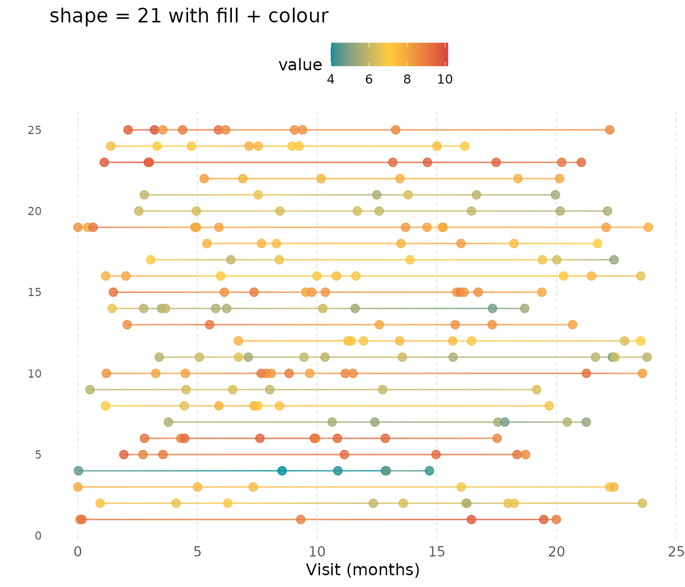
# shape 23 = filled diamond
ggplot(
df,
aes(x = visit_month, id = subject_id, colour = hba1c, fill = hba1c)
) +
geom_kodom_line(shape = 23, size = 2.5) +
scale_colour_kodom() +
scale_fill_kodom() +
labs(x = "Visit (months)", y = "", title = "shape = 23 (diamond)") +
theme_kodom()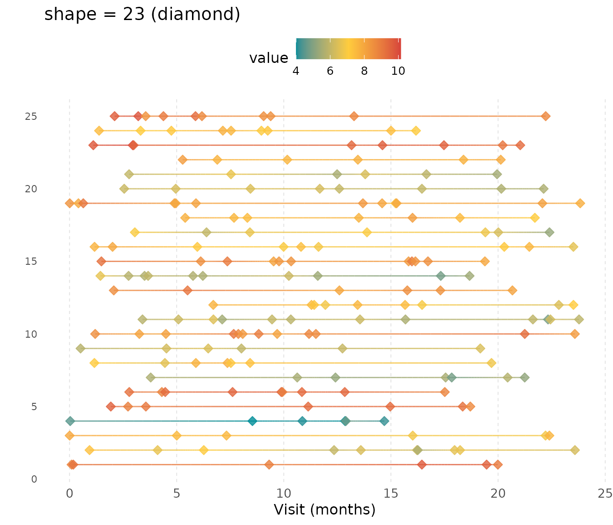
6. Controlling line appearance
linewidth sets the path width. alpha
controls transparency for both line and points.
ggplot(df, aes(x = visit_month, id = subject_id, colour = hba1c)) +
geom_kodom_line(linewidth = 3, alpha = 0.5) +
scale_colour_kodom() +
labs(x = "Visit (months)", y = "", title = "linewidth = 3, alpha = 0.5") +
theme_kodom()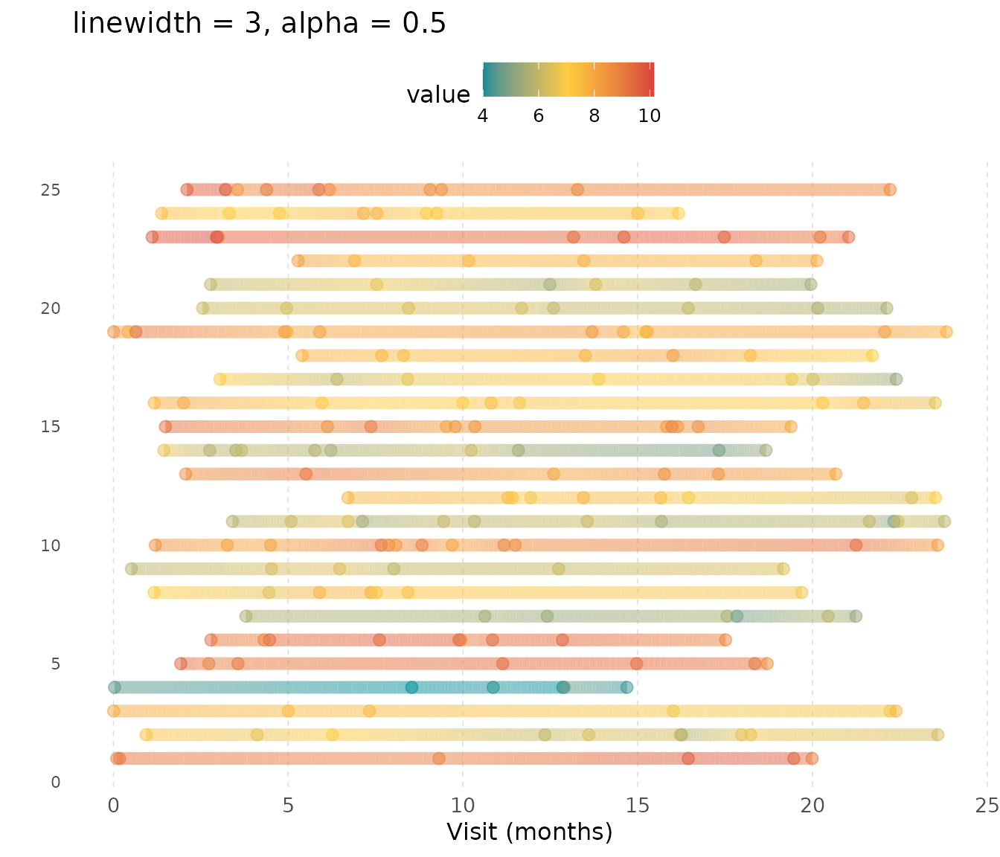
7. Discrete color bands with
scale_colour_kodom(discretize = TRUE)
Continuous gradients can wash out when values cluster tightly.
discretize = TRUE switches to solid color bands, and
color_breaks sets the clinical thresholds.
ggplot(df, aes(x = visit_month, id = subject_id, colour = hba1c)) +
geom_kodom_line(sort_by = "mean") +
scale_colour_kodom(
discretize = TRUE,
color_breaks = c(5.7, 6.5, 8),
name = "HbA1c (%)"
) +
labs(x = "Visit (months)", y = "", title = "Discrete clinical bands") +
theme_kodom()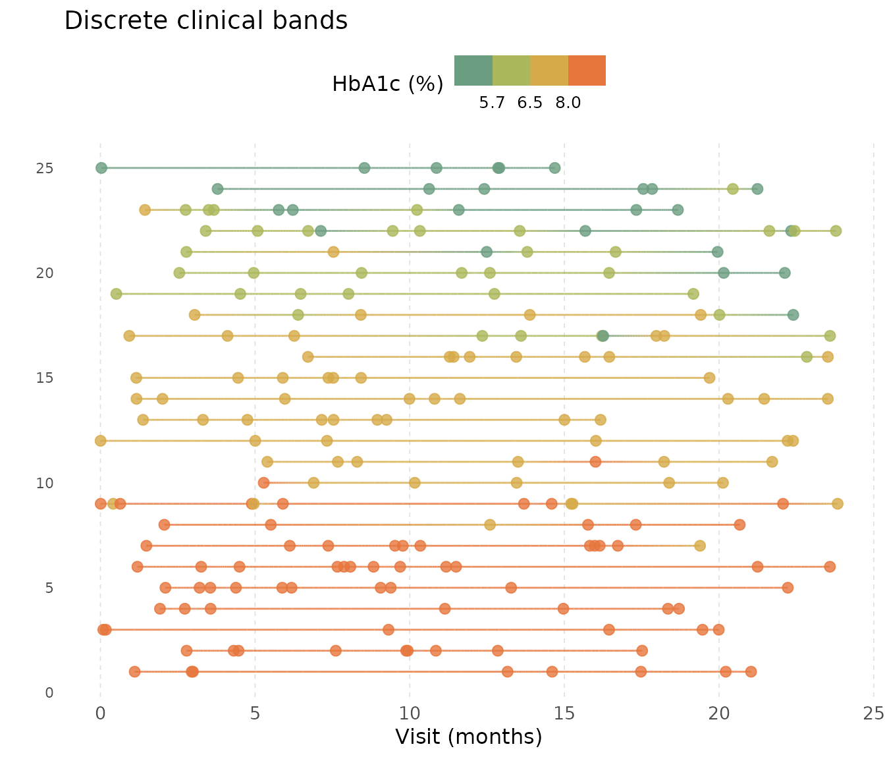
8. Independent size and linewidth —
encoding patient covariates
size controls only the observation
markers; linewidth controls only the
connecting path. They are independently routed to
GeomPoint and GeomSegment respectively, so
mapping one has no effect on the other.
Use this to encode a fixed patient-level covariate (here,
age) as point size while keeping the path width
constant:
ggplot(df, aes(
x = visit_month, id = subject_id,
colour = hba1c, size = age
)) +
geom_kodom_line(sort_by = "mean", linewidth = 0.4) +
scale_colour_kodom() +
scale_size_continuous(range = c(1, 4), name = "Age") +
labs(
x = "Visit (months)", y = "",
title = "Point size = patient age, path width fixed"
) +
theme_kodom()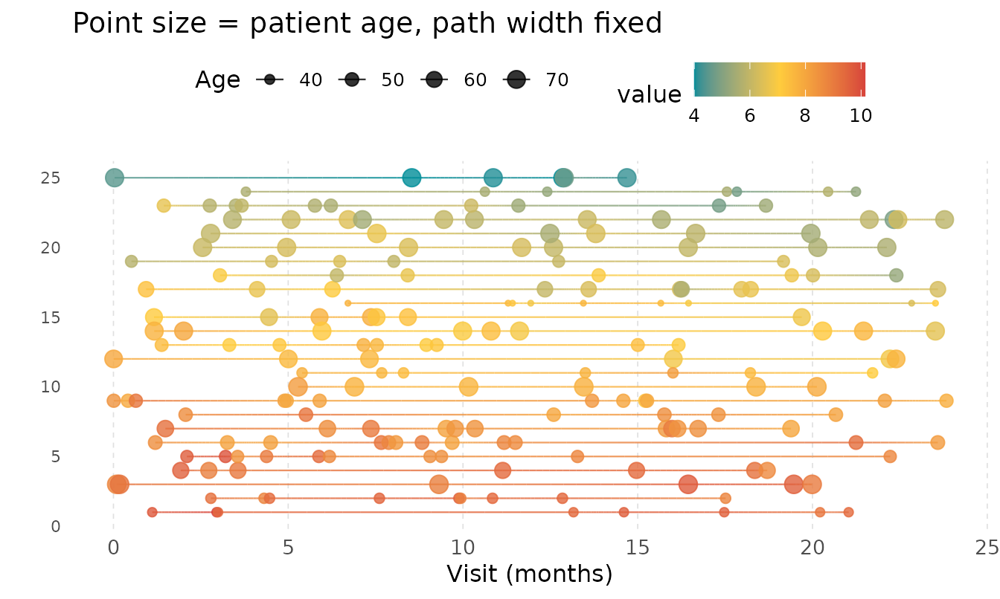
alpha works the same way — here it encodes age as
opacity, making older patients’ trajectories more prominent:
ggplot(df, aes(
x = visit_month, id = subject_id,
colour = hba1c, alpha = age
)) +
geom_kodom_line(sort_by = "mean") +
scale_colour_kodom() +
scale_alpha_continuous(range = c(0.2, 1), name = "Age") +
labs(
x = "Visit (months)", y = "",
title = "Opacity = patient age"
) +
theme_kodom()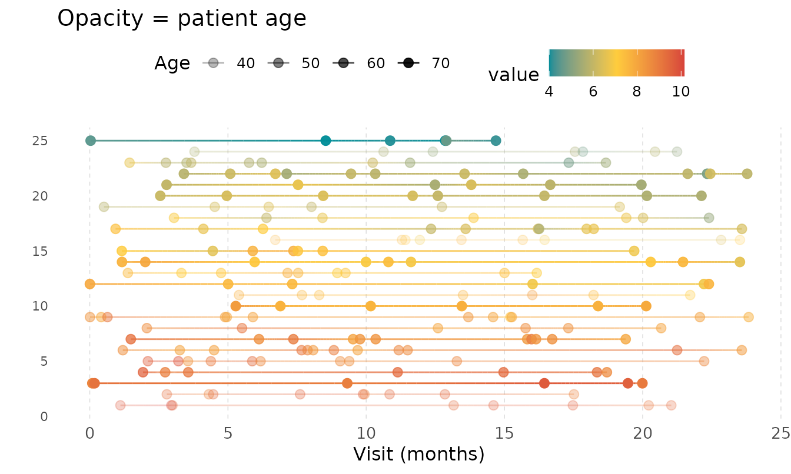
Both can be combined — size and alpha each independently driven by a covariate:
ggplot(df, aes(
x = visit_month, id = subject_id,
colour = hba1c, size = age, alpha = age
)) +
geom_kodom_line(sort_by = "mean", linewidth = 0.3) +
scale_colour_kodom() +
scale_size_continuous(range = c(1, 4), name = "Age") +
scale_alpha_continuous(range = c(0.25, 1), guide = "none") +
labs(
x = "Visit (months)", y = "",
title = "Size + opacity both encode age"
) +
theme_kodom()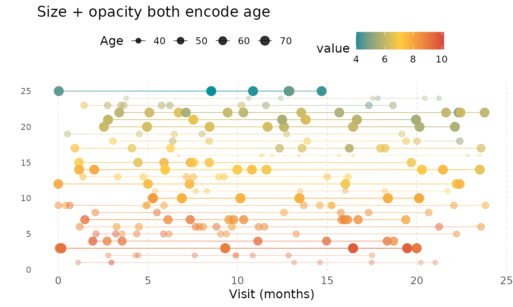
10. Faceting by a grouping variable
Because geom_kodom_line() is a standard ggplot2 layer,
facet_wrap() and facet_grid() work out of the
box. Lane ordering is computed independently within each facet
panel.
ggplot(df, aes(x = visit_month, id = subject_id, colour = hba1c)) +
geom_kodom_line(sort_by = "mean") +
scale_colour_kodom(color_breaks = c(5.7, 6.5, 8)) +
facet_wrap(~arm) +
labs(x = "Visit (months)", y = "", title = "Treatment vs. Control") +
theme_kodom()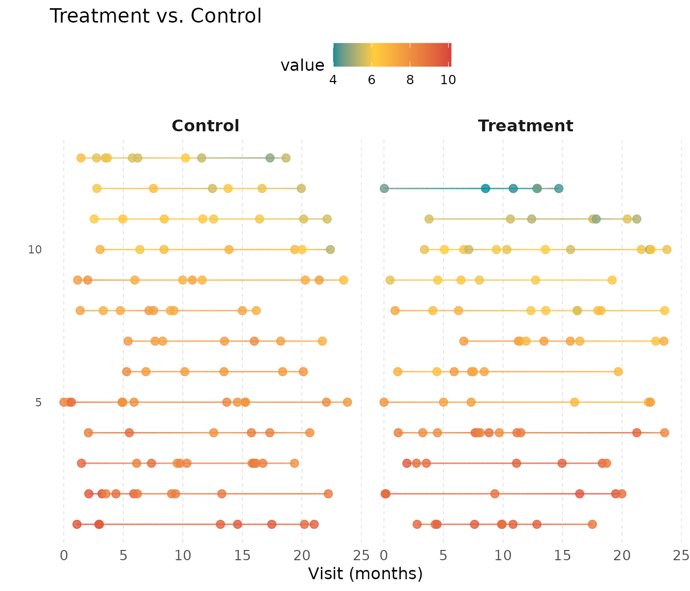
11. Y-axis subject labels
The y-axis shows integer lane numbers by default. Use
scale_y_continuous() to replace them with subject IDs, or
theme() to suppress them entirely.
# Suppress y labels for large cohorts — usually the right choice
ggplot(df, aes(x = visit_month, id = subject_id, colour = hba1c)) +
geom_kodom_line(sort_by = "mean") +
scale_colour_kodom() +
labs(x = "Visit (months)", y = "") +
theme_kodom() +
theme(axis.text.y = element_blank())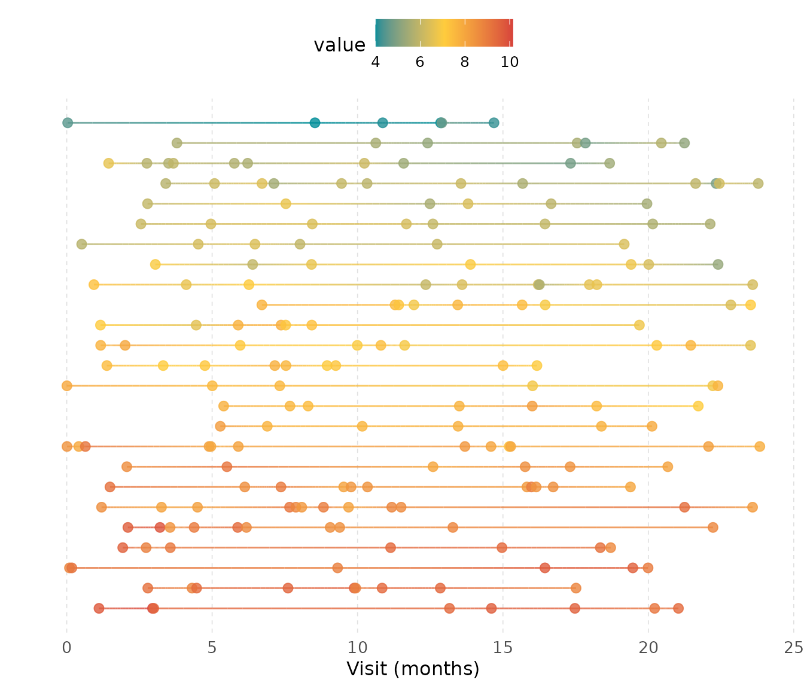
12. Full palette reference
# View the three anchor colors and any interpolated expansion
scales::show_col(kodom_colors(7))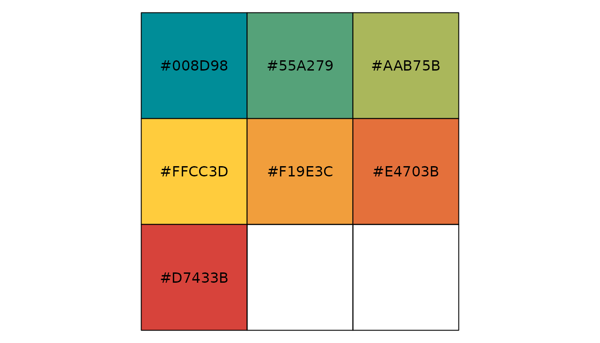
kodom_colors() returns the three anchors (teal
#008D98, gold #FFCC3D, red
#D7433B). Passing n > 3 interpolates
between them via colorRampPalette.